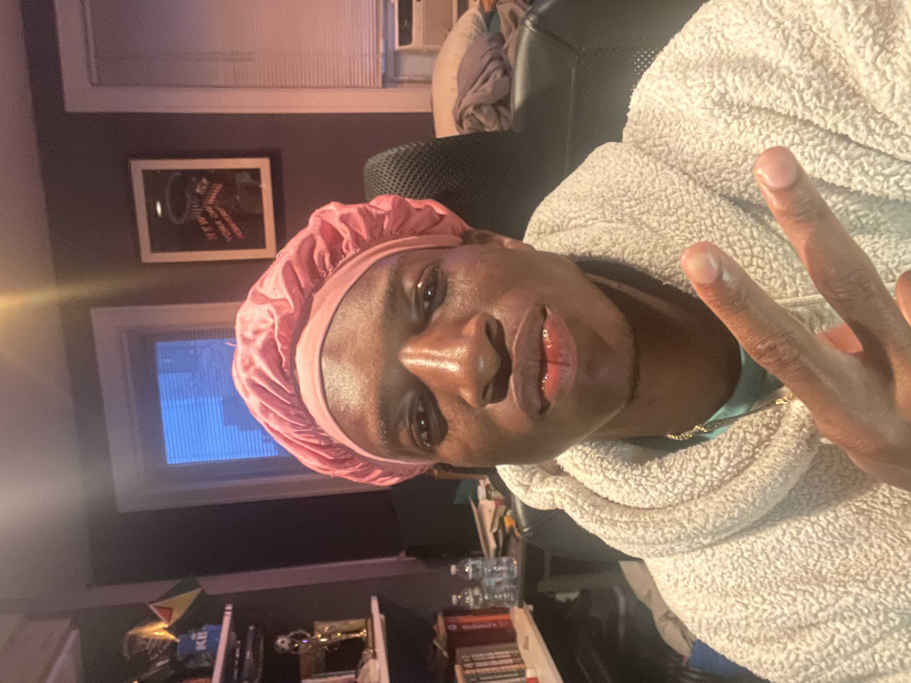

Wake Up Diner
Wake Up DinerWelcome to Wake Up Diner
Established in 2005 by Ty Reid, Wake Up Diner has been a beloved institution in the heart of our community for nearly two decades. From our humble beginnings, we have grown to become a cherished gathering place where friends, families, and neighbors come together to enjoy delicious food, warm hospitality, and a welcoming atmosphere.
Our Story
Ty Reid's vision for Wake Up Diner was born out of a desire to create a place where people could start their day on the right foot – with a hearty breakfast, a hot cup of coffee, and a friendly smile. Drawing inspiration from his own experiences growing up in a close-knit community, Ty set out to build a diner that would become a beloved fixture in the neighborhood.
Our Philosophy
At Wake Up Diner, we believe that breakfast is more than just the most important meal of the day – it's a time to connect with loved ones, fuel up for the day ahead, and indulge in the simple pleasures of good food and good company. That's why we're committed to serving up the finest breakfast fare using only the freshest ingredients and time-honored recipes passed down through generations.
Our Menu
From fluffy stacks of pancakes to sizzling skillets piled high with eggs and bacon, our menu features all your breakfast favorites and more. Whether you're craving something sweet, savory, or somewhere in between, we've got you covered. And for those who prefer to sleep in, we also offer a delicious selection of lunch options to satisfy your midday cravings.

Our Community
At Wake Up Diner, we believe in giving back to the community that has given us so much. That's why we're proud to support local charities, schools, and organizations through donations, sponsorships, and volunteer efforts. We also strive to create a welcoming environment where everyone feels like family – because to us, our customers aren't just patrons, they're part of the Wake Up Diner community.
Join Us
Whether you're a regular customer or a first-time visitor, we invite you to join us at Wake Up Diner and experience the magic for yourself. From our friendly staff to our mouthwatering menu, every aspect of our diner is designed to make you feel right at home. So come on in, grab a seat, and let us help you start your day off right. At Wake Up Diner, every meal is a reason to celebrate.